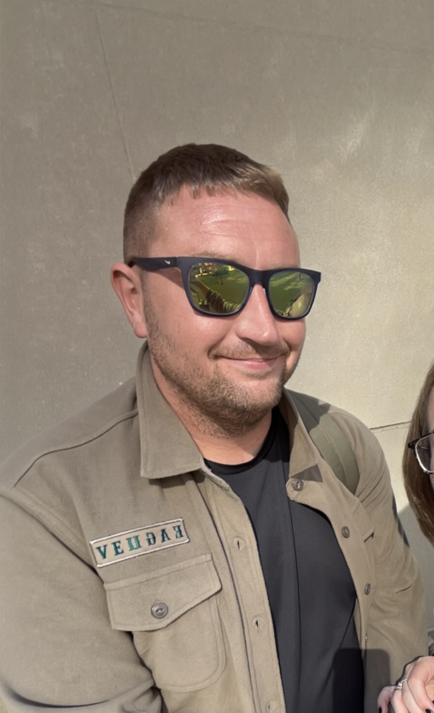

What I’m learning
Building for people
From semantic page structure to keyboard-friendly interactions, I’m learning to make websites work for more people and more devices.
See my skillsEmerging IT & network administration · Mattoon/Effingham, Illinois · surrounding areas
Hi, I’m Brady Chamberlin —a motivated learner building a foundation in IT, network administration, web design, and user experience. I follow cybersecurity trends and hope to grow toward digital forensics, where careful technical work can help people in tangible ways. I’m currently learning Windows Server and exploring how AI can be applied in real-world settings to address needs existing solutions may not meet and make a meaningful difference in people’s lives.
Currently learning, making, and open to opportunities in IT support, network administration, and related roles.

Interactive career explorer
Choose an interest to explore related career fields, national salary data, and possible job opportunities.
A useful mix
My web design coursework has introduced me to HTML, CSS, JavaScript, responsive design, accessibility, and user experience. I’m also learning Windows Server and exploring how AI might help solve real-world problems where current approaches fall short. Alongside that foundation, I follow developments in cybersecurity and technology as I explore IT support, network administration, and eventually digital forensics. I bring patience, curiosity, and a willingness to learn the next tool—after reading the instructions, usually.
What I’m learning
From semantic page structure to keyboard-friendly interactions, I’m learning to make websites work for more people and more devices.
See my skillsWhat motivates me
From designing websites to following cybersecurity and technology news, I enjoy learning how digital systems work. I also root for the Philadelphia Eagles—proof that commitment matters even when the fourth quarter gets stressful.
Get to know meNext chapter
Looking for an opportunity in IT support, network administration, and related fields.
Get in touch